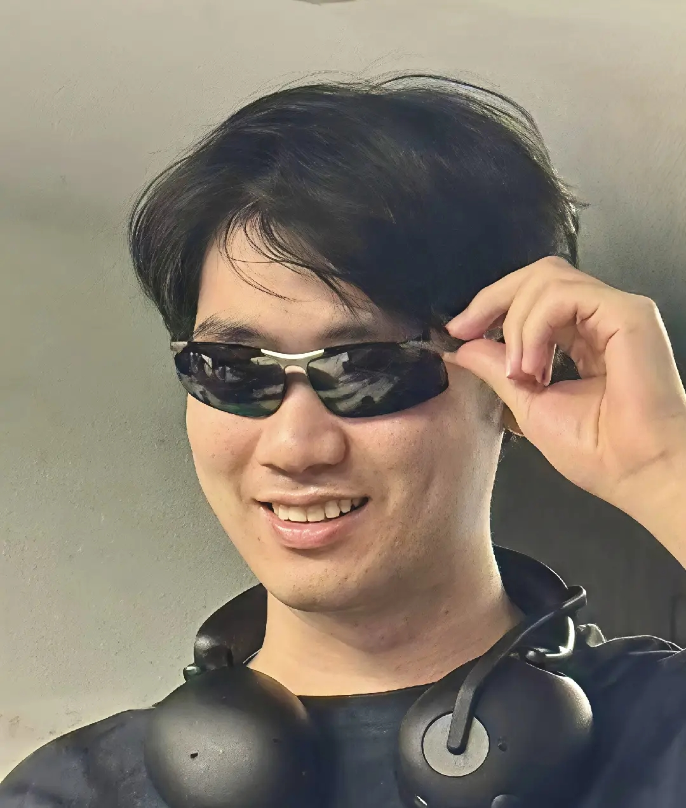
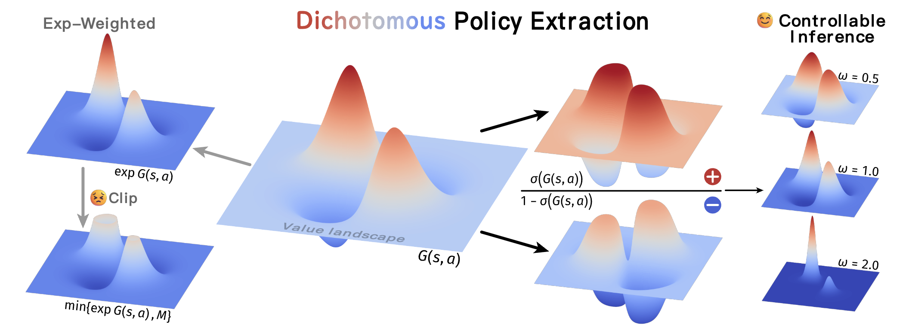
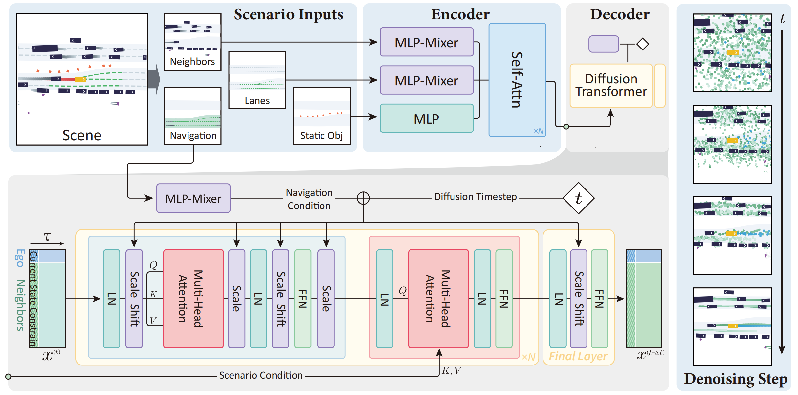
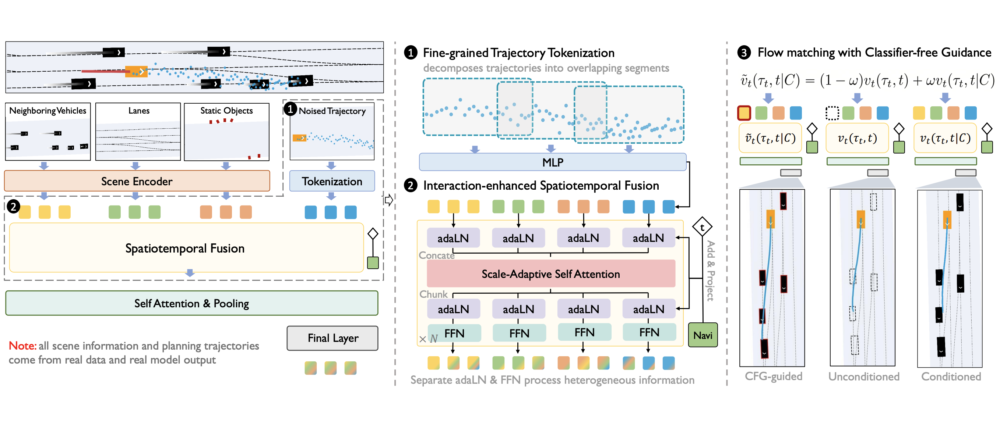

Hi, I'm Ruiming!
I am a Ph.D. student at the Institute of Automation, Chinese Academy of Sciences (CASIA), advised by Prof. Jinqiao Wang. I am also a research intern at Tsinghua AIR, advised by Dr. Xianyuan Zhan. My goal is to build intelligent agents that can perceive, simulate, and interact with the physical world.
Currently, I am working on:
- (Generative Models for Decision-Making) Leveraging diffusion and flow-matching models for planning, spanning autonomous driving, embodied manipulation, and RL-based post-training of large models.
- (Multimodal Generative Models) Building generative world models that integrate vision, language, action, and 3D structure for practical AI agents.
- (Embodied AI) Developing intelligent agents that understand, simulate, and interact with the physical world.
I am always excited to connect with like-minded researchers and explore potential collaborations. Feel free to reach out to me via email or connect with me on GitHub!

Email: liangruiming2024@ia.ac.cn
Phone: (+86) 180-3885-8854
Institution: CASIA, Beijing, P.R.C.
News
- Diffusion-Planner on GitHub has surpassed 1,000 stars. 🌟
- One paper (DIPOLE) on dichotomous diffusion policy optimization is accepted to ICLR 2026.
- One paper (Flow-Planner) on flow matching-based autonomous driving planning is accepted to NeurIPS 2025.
- One paper (Diffusion-Planner) on diffusion-based autonomous driving planning is selected as Oral presentation at ICLR 2025.
- Started joint internship at Xiaomi EV on diffusion decision-making for autonomous driving (Apr. 2025).
- Started collaboration with Shanghai AI Lab on 3D articulated object generation (Nov. 2024).
- Started Ph.D. at Institute of Automation, Chinese Academy of Sciences, advised by Prof. Jinqiao Wang (Sept. 2024).
Research Experience
-
 Research Intern — Diffusion Models for Decision-Making Institute for AI Industry Research (AIR), Tsinghua University Jun. 2023 – Present Advised by Dr. Xianyuan Zhan
Research Intern — Diffusion Models for Decision-Making Institute for AI Industry Research (AIR), Tsinghua University Jun. 2023 – Present Advised by Dr. Xianyuan Zhan -
Joint Research Intern with AIR — Autonomous Driving Xiaomi EV Apr. 2025 – Present Diffusion decision-making for real-world autonomous driving deployment
Selected Publications
* equal contribution
-

-

-

-
-

Professional Services
Reviewer for ICLR 2026, IEEE RA-L